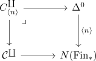

fibre of C^coprod as C^n
Proposition
Let $C$ be a simplicial set, $C^{\coprod}$ the C^coprod for a simplicial set. Then the fibre $C^{\coprod}_{ \langle n\rangle}$ is canonically isomorphic to $\mathcal{C}^n$
Proof
Note that the fibre is given by the pullback

Hence consider
\begin{align*}
\mathrm{Hom}_{/N(\mathrm{Fin}_*)}(\Delta^0, C^{\coprod})
\end{align*}
with $\Delta^0 \rightarrow C^{\coprod}$ which is precisely the fibre.
Then using the universal property of $C^{\coprod}$ for $K = \Delta^0$ we get a bijection
\begin{align*}
C^{\coprod}_{ \langle n\rangle} \cong& \mathrm{Hom}_{N(\mathrm{Fin}_*)}(\Delta^0, C^{\coprod}) \\
\cong& \mathrm{Hom}_{\mathrm{sSet}}(\Delta^0 \times_{N(\mathrm{Fin}_*)} N(\Gamma^*), \mathcal{C})
\end{align*}
where
\begin{align*}
\Delta^0 \times_{N(\mathrm{Fin}_*)} N(\Gamma^*) \cong \coprod_{i \in \{1,...,n\}} \Delta^0
\end{align*}
is given by the disjoint union of the copies $( \langle n\rangle, i)$ for $i \in \{1,...,n\}$ (and higher simplices, which map to identities - hence no other nondegenerate simplices)
Therefore we get
\begin{align*}
\mathrm{Hom}_{\mathrm{sSet}}(\Delta^0 \times_{N(\mathrm{Fin}_*)} N(\Gamma^*), \mathcal{C}) \cong&
\mathrm{Hom}_{\mathrm{sSet}}(\coprod_{i \in \{1,...,n\}} \Delta^0, \mathcal{C}) \\
\cong& \prod_{i \in \{1,...,n\}} \mathrm{Hom}_{\mathrm{sSet}}(\Delta^0, \mathcal{C}) \\
\cong& \mathcal{C}^n
\end{align*}